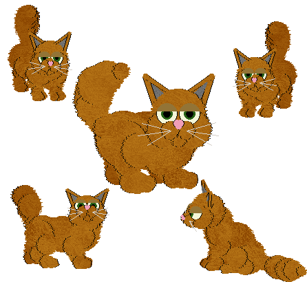

NOTE: If one of my breedz crashes your game,
please read this.
Sand'z Cattery and the Sand'z Cat
~~~~~~~~~~~~~~~~~~~~~~~~~~~~~
This page is dedicated to Wendy Zerla (also known as beach girl), who bred
loads of fantastic catz which she made available to us all, and to the
Sand'z Cat which I made for her from her special Fug pet.
Sand'z Cattery site is still online, but hasn't been
updated for several years. It contains an incredible array of fantastic
downloadable adoptions, all of which will work in Catz 3, Catz 4, or Catz 5.
Wendy was not only a very imaginative breeder; she also worked hard at
hexing and was always eager to get tips from me. That's why her site has a
beautiful "shades of brown" set of downloadable petz dedicated to myself
*blush*. She became one of the more imaginative hexers of the day. I miss
her. Every so often I go to her site with sadness, mixed with pleasure that
she has left her site online for each new generations of Petz fans to enjoy.
Almost everything there is still downloadable.

Here's what Wendy had to say about the breed: "Sand'z Catz are sweet, gentle
giants. They are born 2 to 3 times larger than a normal catz. They get
smaller as they grow up. When full grown they will be up to 2 times larger
than an normal catz. This breed was hexed (by Carolyn) from our mascott Fug,
a naturally occuring mutation."
Sandz Cat (Catz
3)/
Catz 3
Non-English ver/
Sandz Cat (Catz
4)/
Sandz Cat (Catz
5)